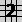
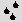
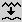

Here is an overview of the process:
Step 1 - (optional) It is suggested that you create a new directory for storing the main terrain and the water map. If you want to create other scenes later, separated directories are required to avoid overwriting of the water maps, which have always the same name. Notice that the scene script will always use a water map which is in the directory where the main terrain is stored. If you intend to edit the scene script mountains_with_water.pov for this particular terrain, you may also copy it in this directory.
 If
you put scenes in other directories than the default Geomorph one
(/home/<your_user_name>/geomorph), you have to tell Povray where
it should look for the include files provided by Geomorph
(geomorph.inc, slope_patterns.inc and so on).
If
you put scenes in other directories than the default Geomorph one
(/home/<your_user_name>/geomorph), you have to tell Povray where
it should look for the include files provided by Geomorph
(geomorph.inc, slope_patterns.inc and so on).You may add this line in your povray.ini file (probably /home/<your_user_name>/.povray/3.6/povray.ini) :
Library_Path=/home/<your_user_name>/geomorph
You may also add the option +L/home/<your_user_name>/geomorph in "Other render options" in your geomorphrc file, which can be modified from the menu bar . Notice that this option is automatically added in fresh installations of Geomorph 0.40 and later.
Step 2 - Create your main terrain. Here a "subdivision 2" terrain  was used. To get a terrain with a lot of small hills, set the roughness at 2 or 3 and distribution at 3 or 4. Also set the higher wave lengths at 0 in the "Wave length control" subdialog. For instance, set the 256 and 512 wave lengths at 0 for a 512x512 map.
Step 3 - Clone the terrain using "Copy under a new name" in the menu bar , name the copy hf_water.png.
Step 4 - Erode your main terrain with the rain erosion algorithm . You should use the new algorithm provided as the default one in Geomorph 0.4. With the older algorithm, the channels would be too weak. In the example, the maximum value of 200 000 "drops" was used.
Step 5 - For "filling" the eroded channels, we smooth the water map hf_water.png. Use the smooth tool  with a radius like 4 pixels for a 512x512 map. Save hf_water.png.
Step 6 - Rendering: Activate the window of your main terrain (I mean click on it), find an adequate viewpoint with the preview camera and render mountains_with_water.pov
Step 7 - If the channels seem too wide, you have 2 choices. The channels width does not scale with the terrain size. So, if you repeat the steps 2 to 6 with a larger terrain, channels would look narrower. In the example shown, an alternate solution was used:
1 - Revert the main terrain with the revert tool . Erosion channels becomes crests.
2 - Use the crest tool to narrow these crests. The default value of 3 steps should be a good choice.
3 - Revert back the main terrain with the revert tool .
Step 8 - Creation of the lakes: There are two techniques to create the lakes.
1 - The simpler one is to use the "Threshold" tool on the water map to fill it up to a given level. The texture used in mountains_with_water.pov shows a naked rock over the water level. To be consistent with this texture, you should set the lower level at 10142 (this is one of the values over which the "Minimum" scale fells automatically). You can use a different level, but you'll have to edit mountains_with_water.pov to set the "waterlevel" variable to a suitable level. This is the line to change:
#declare waterlevel = 10300.0*0.3/65535.0;
Use a level slightly over the threshold level. For instance, here, the difference between 10300 and 10142 is the height of the rock band we see over the water.
 The
water level is multiplied by 0.3 because all Geomorph terrains are
scaled by 0.3 on the Y axis. It is divided by 65535 to scale the water
level from the "height field world", with a dynamic range of 0 to
65535, to the "Povray world", with a range of 0 to 1.
The
water level is multiplied by 0.3 because all Geomorph terrains are
scaled by 0.3 on the Y axis. It is divided by 65535 to scale the water
level from the "height field world", with a dynamic range of 0 to
65535, to the "Povray world", with a range of 0 to 1.2 - An other technique is to use the "Fill bucket" pen (it is in the "draw" dialog ) to fill depressions up on hf_water.png. This allows to create lakes at more than one altitude level. However, it is not possible with the provided mountains_with_water.pov to produce a naked rock band just over the water surface, when there are more than one level. Furthermore, if you have some areas under the default water level of 10300, they will appear rocky. Maybe you'll want to edit the scene to decrease the water level and get vegetation everywhere.
Caution: before and after using the "Fill bucket tool", save your work! It seems to have an index overflow bug somewhere I was not able to put right until now. This creates sometimes a "segmentation fault" (bomb).
Step 9 - Fine-tune the scale of the main terrain, if required. In the example shown, the terrain was stretched by 200% on the X and the Z axis (the "ground plane"). The scale instruction appears like comments in mountains_with_water.pov. Playing with the scale can give more natural results. The drawback is that it is not shown and thus not controlled in the preview dialog (not yet).
___________________
Written in January 2007
 Back to the
documentation index
Back to the
documentation indexContact:
Patrice St-Gelais